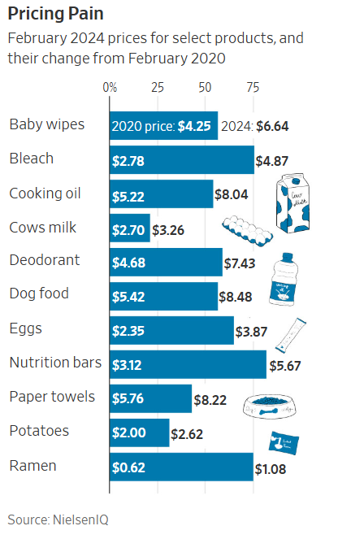
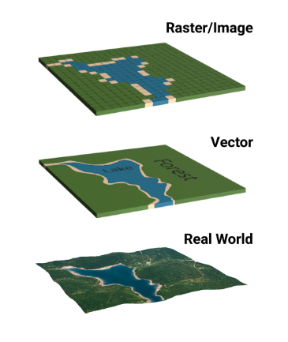
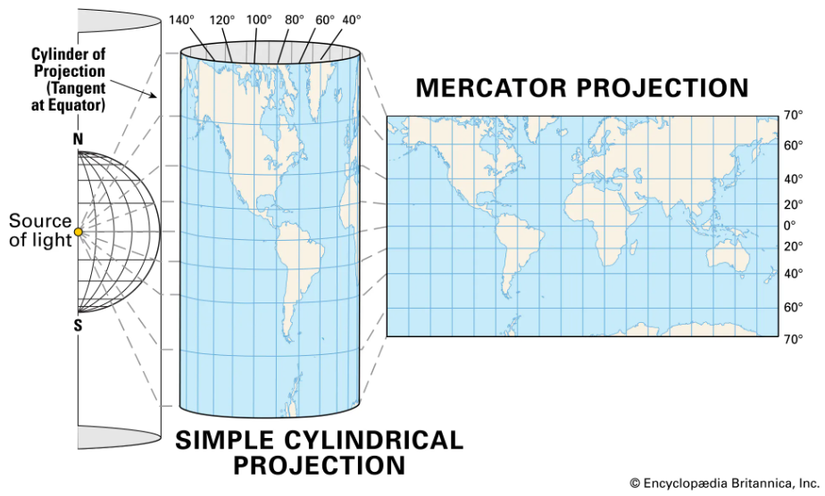
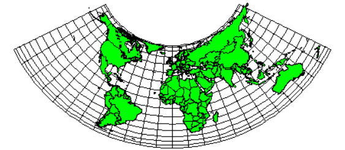
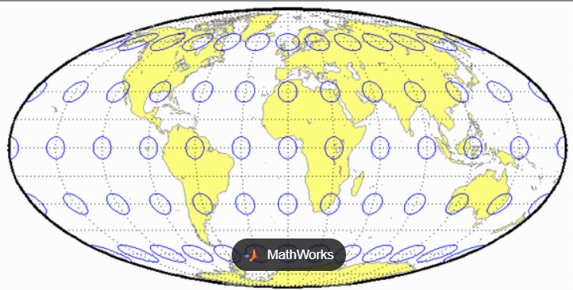
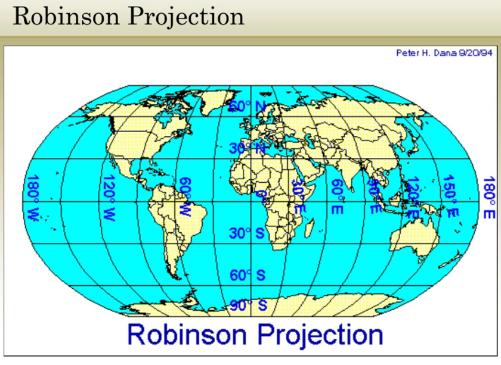
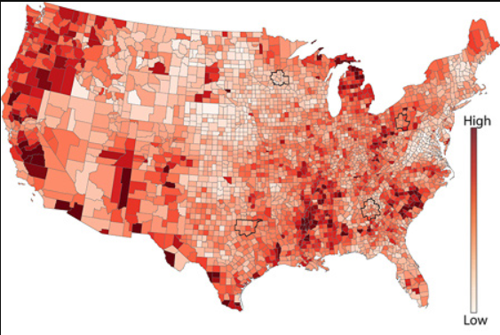
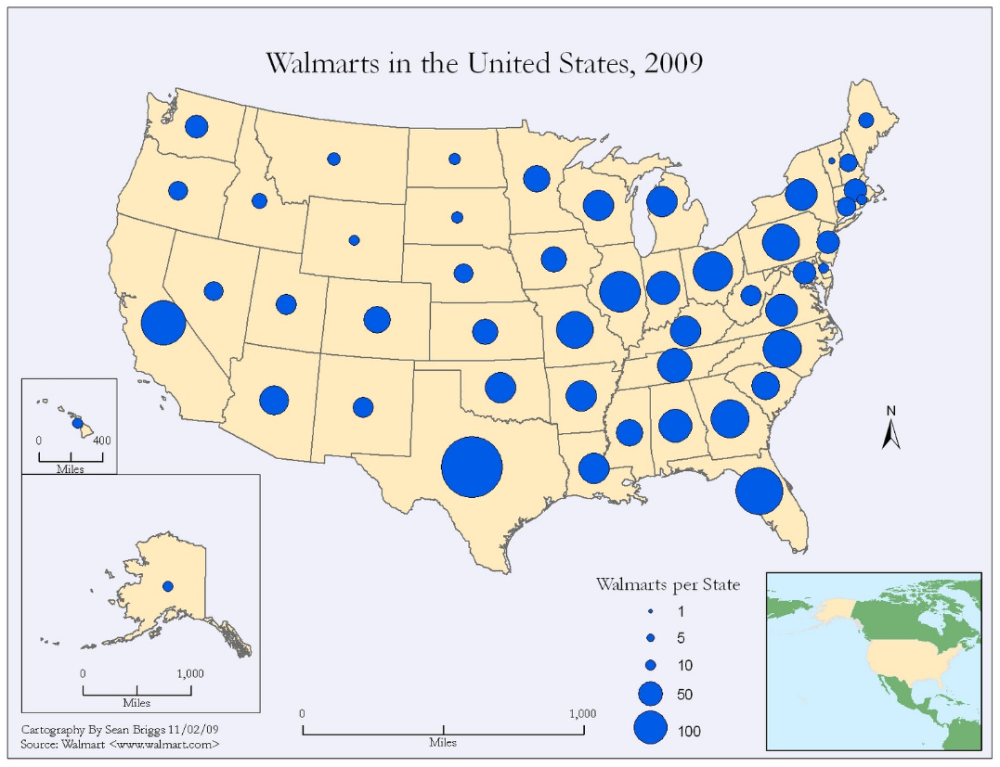
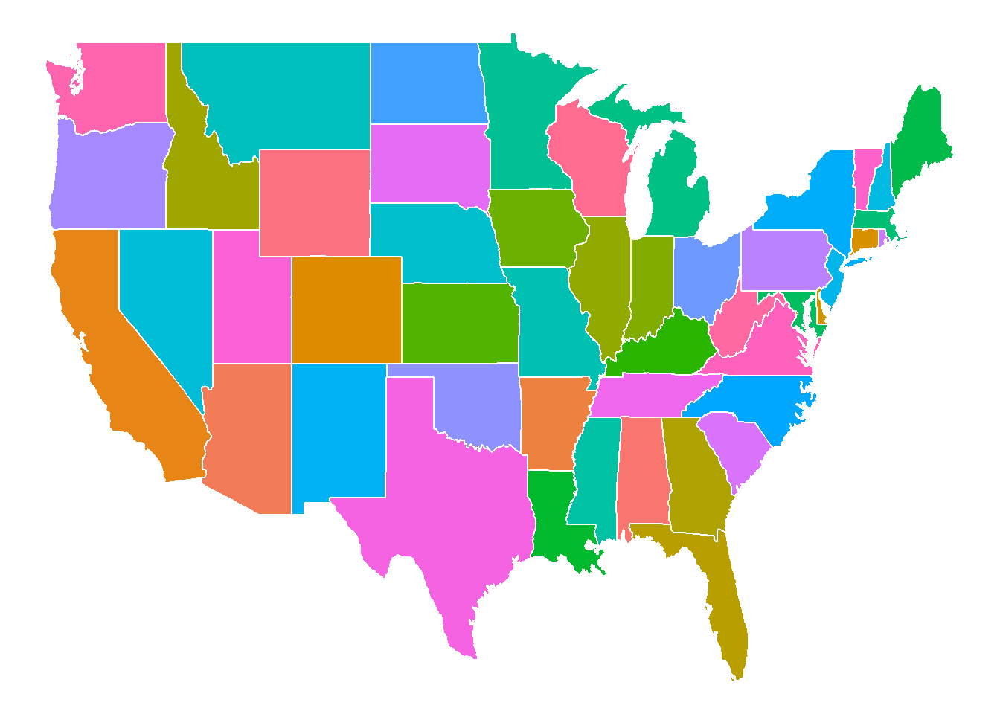

Review: What data is shown? How many of Gestalt Principles can you identify?
Praise: How does this graphic help you analyze the data the most?
Critique: What’s one thing that could potentially create confusion or be misleading? How would you fix that?

Learning Goals
Explain why spatial data matters
Apply spatial data to Choropleth Maps
What is Spatial Data?
Geospatial data
Refers to information that identifies the location, shape, and relationships of objects on Earth using coordinates, maps, or geometry.
It combines location information (latitude/longitude), attribute information (descriptive details), and often temporal data (time-related context) to provide a complete geographic picture.
Why is it important?
Helps reveal patterns across space
Supports decision-making in:
Public health
Urban planning
Politics
Climate science
Businesses
Types of Geographic Data
Vector Data
Raster Data
Vector Data
Represents discrete features
Types:
Points (e.g., schools, coordinates)
Lines (e.g., roads, rivers)
Polygons (e.g., countries, districts)
Best for bounded, discrete data
Vector Data Examples
library(sf)
Warning: package 'sf' was built under R version 4.5.2
Linking to GEOS 3.13.1, GDAL 3.11.4, PROJ 9.7.0; sf_use_s2() is TRUE
Gridded data like satellite imagery or temperature maps

Projections and Coordinate Systems
What is a Projection?
A mathematical transformation from a globe to a flat map
Downside: All projections distort something (shape, area, distance, or direction)
Common projections
Mercator
Preserves angles
Distorts area

Equal-area (Albers, Mollweide)
Accurate for statistical mapping
Albers Equal Area Conic Projection

Mollweide Projection

Robinson
Visually appealing world maps

Common Types of Map Visualizations
Choropleth Maps

Symbol/Proportional Maps

Choropleth Maps
Map with where areas (polygons) are shaded based on a quantitative variable
Election results
Population density
Covid-19 rates
How Choropleth Maps Work
Each region gets a color
Color intensity represents magnitude (map data values to color)
Example
library(tidyverse)
Warning: package 'tidyverse' was built under R version 4.5.1
Warning: package 'ggplot2' was built under R version 4.5.1
Warning: package 'tibble' was built under R version 4.5.1
Warning: package 'tidyr' was built under R version 4.5.1
Warning: package 'readr' was built under R version 4.5.1
Warning: package 'purrr' was built under R version 4.5.1
Warning: package 'dplyr' was built under R version 4.5.1
Warning: package 'stringr' was built under R version 4.5.1
Warning: package 'forcats' was built under R version 4.5.1
Warning: package 'lubridate' was built under R version 4.5.1
── Attaching core tidyverse packages ──────────────────────── tidyverse 2.0.0 ──
✔ dplyr 1.1.4 ✔ readr 2.1.5
✔ forcats 1.0.1 ✔ stringr 1.5.2
✔ ggplot2 4.0.0 ✔ tibble 3.3.0
✔ lubridate 1.9.4 ✔ tidyr 1.3.1
✔ purrr 1.1.0
── Conflicts ────────────────────────────────────────── tidyverse_conflicts() ──
✖ dplyr::filter() masks stats::filter()
✖ dplyr::lag() masks stats::lag()
ℹ Use the conflicted package (<http://conflicted.r-lib.org/>) to force all conflicts to become errors
library(maps)
Warning: package 'maps' was built under R version 4.5.2
Attaching package: 'maps'
The following object is masked from 'package:purrr':
map
us_states <-map_data("state")ggplot(us_states, aes(long, lat, group = group, fill = region)) +geom_polygon(color ="white") +theme_void() +theme(legend.position ="none")

Design principles
Use categorical scales for qualitative variables
Use sequential or diverging color scales for quantitative variables.
Avoid categorical color schemes for continuous data.
Color schemes must be interpretable and colorblind-friendly.
Beware of area bias: larger regions may dominate visually.
Normalize data where needed (e.g. per capita, not absolute counts).